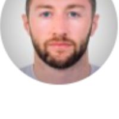

Mualim
I consulted on product design for an AI-driven tutor for kids in Saudi Arabia — research, strategy, prototyping, and shipped design.
Read the case study →Hafsah Zulafiqar · Customer Experience & Design Manager · Product Design Manager · Dubai, UAE
After working across design, strategy, marketing, and growth.
Hi! I'm trained on Hafsah's CV — ask me about her design work, her growth & marketing results, or why she'd be a great hire.
Real numbers from real roles — the part that's easy to verify.
Five case studies, spanning design and growth.
I consulted on product design for an AI-driven tutor for kids in Saudi Arabia — research, strategy, prototyping, and shipped design.
Read the case study →I led a Double Diamond redesign of the Pura super-health app that lifted user satisfaction 60%, plus a cybersecurity dashboard for a mega facility in Abu Dhabi.
Read the case study →I ran a 3-month UX overhaul of a B2B retailer app that drove a 60% increase in user acquisition.
Read the case study →I moved from CX & Design Manager to Growth & Marketing Manager — I led a redesign that lifted conversion 146%, then built a growth strategy that grew social sales 400%.
Read the case study →I ran a full UX audit and redesign of a GTM app for coaches targeting 50% user growth, plus an AI-driven module revamp.
Read the case study →Four steps, repeated on every project — from a first-week audit to a growth strategy that ships.
I run continuous discovery: personas, affinity mapping, and opportunity solution trees, to understand what's actually broken before touching a single screen.
I follow the Double Diamond in practice: wireframes, prototypes, and real user testing — validating a direction before it ships, not after.
I ship every design with a way to measure it — A/B tests, real analytics, real usage data. If it doesn't move a number, it isn't done.
Once something works, I build the CRM lifecycle and growth strategy to scale it — the same instinct that took FITT Meals from a redesign to a 30% YoY growth engine.
Not a rhetorical question — three real, verifiable differences.
Most people own one side of the funnel. I've run both — the redesign, and the growth strategy that followed it, at the same company.
I run continuous discovery and the Double Diamond framework on every project, validating with real users before anything ships.
146% conversion. 400% social growth. 60% user acquisition. Every case study I've shipped ends with a real result, not a vague claim.
Feedback from people I've worked with directly.
I had the pleasure of managing Hafsah during her time as a Product Designer at Kahunas, and I can confidently say she was an extremely valuable member of the team. Hafsah consistently demonstrated a strong ability to translate complex product requirements into…

Aaron Kane
Product Owner, Kahunas
During her 9-month tenure as a CX/UX designer in my team, Hafsah consistently impressed with her expertise and autonomy. Her critical thinking and problem-solving skills shone through in every project, particularly when she managed the implementation of an animated dashboard with a third-party service provider. Hafsah's…
Driss Lahjouji
Innovation & Digital Transformation Leader
Hafsah has a keen eye for detail and has always shown the ability to have the perspective of the client in mind. Her designs show the effort put in to be customer centric while at the same time balancing it with the business objectives. She is a great asset to have for any product team.
Craig Pereira
System and Solutions Engineer, Kahunas.io
Hafsah is a brilliant product manager. Relentless is the right word. In the short time of our work together, I can tell that she knows her users well. She is quick to act, usually one step ahead. She is passionate about building the right products that the user didn't know they needed. I highly recommend Hafsah. I would love to work with…
Jean Marie Cunanan
Business Development
Hafsah briefly joined my team as a Product Designer, and her passion for delivering the most convenient and ideal UX for customers was immediately clear. She constantly pushed herself to truly understand our users, resulting in designs that genuinely resonated with their needs. I'm confident she'll do wonders in her future roles as a…
Matin Shoghi
Entrepreneur, Product Builder
Have a role in mind, or a project that needs both design and growth thinking?
hafsah.zulafiqar@gmail.com